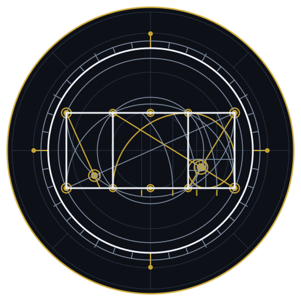

Jay Hambidge¶

Jay Hambidge (1867–1924) rediscovered the proportional grammar of Dynamic Symmetry, showing how root rectangles (\(\sqrt{2}, \sqrt{3}, \sqrt{4}, \sqrt{5}\)), orthogonal reciprocals, and the rectangle of the whirling squares unite Greek vase and temple design with the phyllotaxis of living plants. Rather than measuring shapes by linear fractions, Hambidge illuminated the ancient insight of commensurability in square. This digital archive presents his foundational 1919–1920 Diagonal lessons and Greek Vase synthesis in a synchronized three-track edition with calibrated vector figures.
Books in This Collection¶
Yale University Press · 1919–1920 · 4 Parts · 3 Synchronized Tracks
The Elements of Dynamic Symmetry — Hambidge’s landmark lessons from The Diagonal and Dynamic Symmetry: The Greek Vase, tracing the contrast between static and dynamic symmetry, sunflower phyllotaxis, the root-five and whirling-square rectangles, and area-commensurable partitioning.
Key Features¶
Three Synchronized Tracks
Read every chapter in its faithful primary-source English text alongside concise analytical summaries and scholarly concordance notes linking back to Euclid, Kepler, and D’Arcy Thompson.
Root Rectangles & Whirling Gnomons
Calibrated vector plates illustrate the unfolding of \(\sqrt{1}\) through \(\sqrt{5}\) rectangles, orthogonal reciprocal diagonals, and infinite logarithmic spirals.
Phyllotaxis & Greek Design
Explore how Fibonacci summation ratios in sunflower seed spirals mirror the geometric ratios carved into classical Greek amphorae and architecture.
Reference & Project¶
Scholarly Apparatus
People — Profiles of Jay Hambidge, Arthur Harry Church, Euclid, Kepler, and D’Arcy Thompson
Bibliography — Primary Yale University Press editions and classical geometric sources
Glossary — Core terms of dynamic symmetry, reciprocals, gnomons, and commensurability in square
About This Project
About — Editorial mission, book structure, and digital archive overview
Using This Edition — Guide to multi-track navigation, diagrams, and cross-corpus links